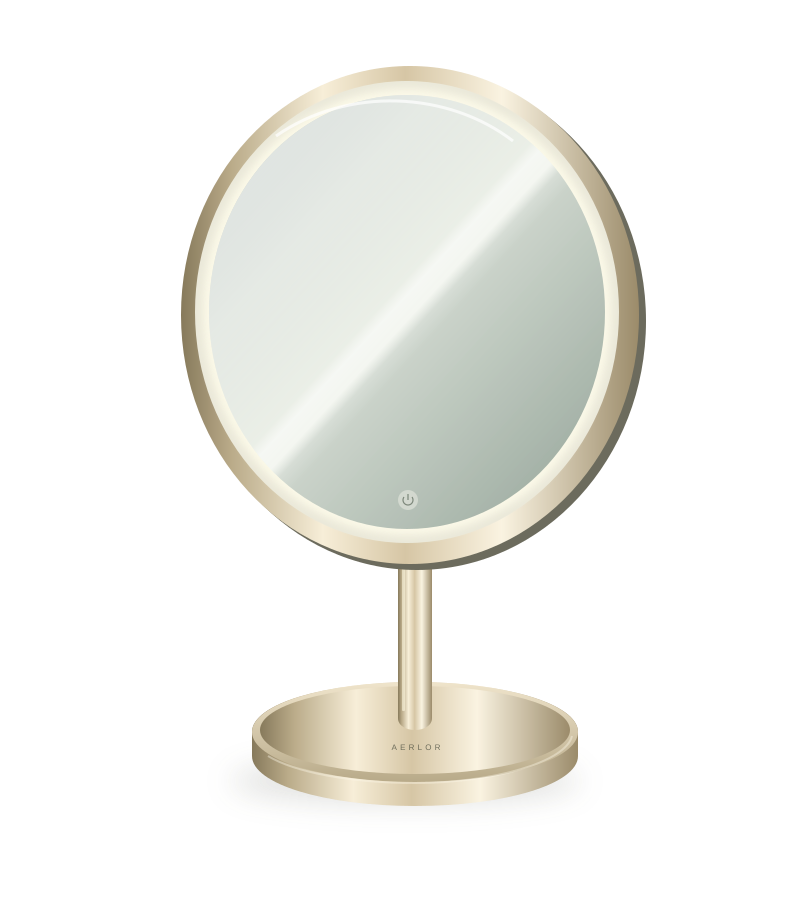

The hotel upgrade guide
A room they book.
A feeling they keep.
Build a more considered getting-ready experience—and a business case your team can evaluate.

CONSIDERED ESSENTIALS. EXCEPTIONAL STAYS.
The hotel upgrade guide
Build a more considered getting-ready experience—and a business case your team can evaluate.

CONSIDERED ESSENTIALS. EXCEPTIONAL STAYS.
THE GETTING-READY GAP
THE FAMILIAR ROUTINE
“it does feel tough to me rely on the hotel dryer.”
A contributor in a women-focused travel discussion describes the challenge of leaving a familiar styling tool at home. Other contributors are happy to use hotel equipment or simplify their routine. [1]
THE PACKING TRADE-OFF
The tool they love.
The space it takes.
Another traveller says their usual styling tool feels too bulky for travel. The replies describe different routines and preferences rather than one universal solution. [2]
THE USEFUL MIRROR
A mirror in the room
is not always a mirror that works.
A traveller asks about a portable mirror, explaining that room mirrors can be badly lit, hard to approach or unavailable while the bathroom is occupied. [3]
SELL THE EXPERIENCE / MEASURE THE RESPONSE
A premium room creates an expectation of care. The getting-ready experience is another place to make that care tangible. The commercial proposition is an opportunity to validate—not an automatic uplift to advertise.
Make the routine easier to understand and more comfortable to complete. Ask guests whether the setup met their needs.
Coordinate the visible objects with the room category and the experience your marketing promises.
Consider an on-request styling service where it suits your audience, with clear instructions and safe handling.
Track actual service requests, fault reports, cleaning time and replacement needs before scaling.
The category has precedent: Hyatt Centric announced a premium dryer rollout in 2016; Four Seasons Resort Oahu lists a lighted makeup and shaving mirror. These are independent operator examples—not AERLOR partners. [4] [5]
AN ILLUSTRATION / NOT A PRICE OFFER
Translate a one-time equipment budget into a cost per occupied room-night. The example below assumes 100 equipped rooms, US$99 per room, a three-year planning life and 75% occupancy. These are hypothetical inputs, not AERLOR pricing or a durability promise.
| Hypothetical per-room cost | 100-room budget | Per occupied night* |
|---|---|---|
| US$69 | US$6,900 | US$0.08 |
| US$99 | US$9,900 | US$0.12 |
| US$149 | US$14,900 | US$0.18 |
| US$199 | US$19,900 | US$0.24 |
*Three-year planning life, 75% occupancy. Cost per occupied room-night = per-room equipment cost ÷ (365 × years × occupancy as a proportion). Room count scales the budget, not the per-room-night result.
Use the editable website calculator ↗MAKE THE EVALUATION DECISION-READY
Record the current amenity, room category, service requests and the tasks guests need to complete.
Engineering must validate the exact product, electrical suitability and instructions. Housekeeping must approve the care process.
Use a defined room group and time window. Record how guests are invited to give feedback and how incidents are handled.
Ask about comfort, ease and fit. Also track faults, support requests, cleaning time and staff observations.
Agree the acceptance criteria before reviewing results. Continue, revise or stop based on evidence, not sunk cost.
A PROPOSAL YOUR TEAM CAN DISCUSS
Propose a qualified pilot—not an unbounded property-wide commitment. Ask for a clear budget, named operational owners and the right to stop if the product or service does not meet the room standard.
What guest experience are we trying to improve, and what is the complete budget?
What changes in the room, at the desk and in the housekeeping routine?
Which exact model, evidence, price and service terms are being approved?
[1] r/HerOneBag — Packing hair products
Contributors describe choosing between packing familiar tools and relying on hotel dryers. Other contributors are happy to use the hotel dryer or simplify their routine. These are self-selected anecdotes, not a representative survey.
[2] r/HerOneBag — What hair styling tools do you take traveling?
The original poster describes a familiar styling tool as too bulky for travel. Replies differ on whether and what to pack.
[3] Mumsnet, 5 May 2024 — Travel mirror recommendations please
A traveller asks about a mirror for use while the bathroom is occupied, then explains that room mirrors can be poorly lit or difficult to approach.
[4] Hyatt Newsroom, 10 May 2016 — Hyatt Centric announces Drybar collaboration
Hyatt announced an in-room premium dryer rollout in 2016. This is category precedent, not evidence about current availability at every hotel or AERLOR performance.
[5] Four Seasons Resort Oahu — Services & amenities
The operator lists a lighted makeup and shaving mirror. It is not an AERLOR customer or endorsement.
Sources reviewed 4 November 2026. Public discussions are qualitative, self-selected and not independently verified as hotel stays. Operator examples are category context only. No affiliation or endorsement is implied.